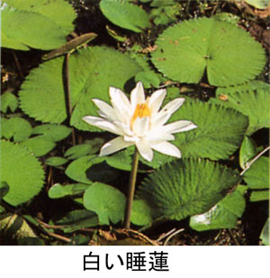

|
第３４ マダン上空の空中戦とパラシュウト脱出
昭和１８年１０月×日、パプア ニユーギニアのマダンにて
午後の事であった。今日もまた嫌な午後三時になった。もうそろそろ敵機が来る頃だと誰でも心の中ではそう考えていた。それで
も黙って素知らぬ顔して仕事をしていた。ブーンとかすかな爆音が聞こえてきた。暫くしてから、私はジャングルの上空が開けて
いる所から、上空の大空を眺めてみた。これはこれはナント！友軍機がアメリカ空軍機を迎え撃ち、大空を舞台に、敵味方の数機
が入り乱れて、大空中戦をマダン上空の大空で激戦中だ！これはこれは滅多なことでは見られない凄い大空中戦だ！大空で要撃戦
が始まっていた。
私は『日本軍勝てッ』と心の中で叫び、神に祈り固唾を飲んで、大空中戦を見守っていた。近くのジャングルの中から、誰かが、
大声で『勝てッ』と叫ぶ！その内に、何時パラシュウトから脱出したか解らなかったが、上空で飛行機から脱出しパラシュウトで
降下している敵兵がいた。パラシュウトに敵兵がブラ下がって居るのがはっきり見える。それを見たマダン守備隊の兵士が一斉に
パラシュトの落下予想地点方向に走って行った。パラシユートで脱出した敵兵は、その後どうなったかは解らない。
空中戦の戦闘で、飛行機からパラシュトで脱出した敵兵の姿を見ていたら、西のほうからザァーッという木の葉を吹き飛ばす様
な凄い妙な音が聞こえてきて、その音と一緒にアメリカ軍の戦闘機がただ一機、ジャングルの梢すれすれに東の敵陣営方向に飛び
去っていく。どうしたんだろう？？と一瞬思った。すると、間髪を入れず、日本軍の戦闘機がこれまたジャングルの梢すれすれに
敵機を猛烈なスピードで追撃して行く。さっきのアメリカ軍飛行機は必死で逃げていたことを知った。上空だけを見ていたら、超
低空でジャングルの梢すれすれでも空中戦が展開していたのでした。
ジャングルの中から、上空の空中戦を見ていた将兵が、期せず一斉に万歳と大声で叫ぶ。そして皆んなが、手をたたいて喜んで
いる。どこからともなく、誰いうともなく、アメリカ軍の飛行機が撃墜されたという。先程の様子から、撃墜された飛行機は我々
の軍通信所近くに墜落したようだ。私も墜落現場と思われる方向に飛んでいった。
暫くジャングルの中の小道を走って行くと、背丈の低い雑木林にでた。上を見たら雑木林の梢に、パラシュウトの白い布切れの
破片が枝にひっ掛かっていた。敵兵は超低空から脱出したらしい。生き延びるために全力を出して、飛行機から脱出したのであろ
う。しかし余りにも低空だったため、パラシュートは半開きのまま木の枝にひっ掛かっていた。
脱出した敵のパイロットはパラシュウトからもぎ取られ、パイロットの体は地面にたたき付けられていた。凄い穴ポコができて
いる。３０センチ位の深さに地面が凹んでいて、その格好が人間の形をしているのでギョッ！とした。また、敵兵の遺体から煙が
立ち上ぼっていた。勇敢に戦死していった敵兵の最後の姿を見た。無惨だ！
早くも、駆け付けた友軍のマダン守備隊が、敵の遺体の検査を始めた。敵の遺体は飛行服を着たままで、しかも軍服には火がつ
いて燃えていた。余りにも無惨な姿で見るに忍びなかった。現場では、将校は私だけだったが、私はマダン通信所長だし非戦闘員
だったから、これから先の仕事は守備隊に任せて引き上げた。
私は通信所に戻っていた。まもなく部下の丸山上等兵、柴田上等兵たちがドヤドヤと帰ってきた。彼等の話によると
『歩兵部隊が敵兵の遺体を検査したら、ポケットの中に、タバコとチョコレート（日本軍の兵士はチョコレートは持っていない）
が入っていた。また、内ポケットに手紙が入っていたので、手紙は直ちに軍司令部に提出された』と言う事だった。
ところで、敵兵の内ポケットから出てきた手紙は封が切ってなかった。その手紙は、豪州のシドニーに住む女性から、アメリカ
兵のパイロットに当てたものでした。その手紙の文面は次の通りです。
『前略 この前、貴方様が休暇で帰ってこられた時、一緒にシドニー公園で、遊んだあの日は非常に楽しかった。余り危険なこと
はしないで、また、休暇を取って帰って来て下さい。お待ちしています。』
……敵の連合軍は余裕がある。休暇を取って女の子と遊んでいる。余り危険なことはするな？とは驚いた。戦争に対する考え方が
違っている。あちらの人は何を考えているのか？理解できない。……
折角、彼女にもらった手紙の封を切らないで基地を飛び立った？どうしてだろう？早く封を切り読めば良かったのに残念な事を
したもんだと、思った。ところが、アメリカ兵のパイロットには、『もらった彼女からの手紙は封を切らずに搭乗すると、無事に
基地に帰還できる。』というジンクスがあった、ということを聞かされた。そんなもんですかね。
それでも、一方、この話を聞いて、話は変わるがこれに似た信仰は日本兵の中にもあった事を知っている。
私がマダン軍通信所長をしていた昭和１８年の夏（７月？）の事だった。マダン軍通信所に新しく６名の補充兵が配属になった。
その中に片目を無くした補充兵中山陸軍一等兵もいて、日本陸軍もかなり苦しい状況に追い込まれている事を洞察した。彼には電
報配達の任務を与えた、真面目な人格者だった。また、目玉がギョロッとした３２歳ぐらいで髭面の田中一等兵がいた。彼は蚊帳
の中で、夜になると、ロウソクの光の下で、ドドイツをよく歌って聞かせてくれた。私もまた、夜は退屈だから『田中一等兵、ド
ドイツを聞かせてくれ』と所望したものだった。その田中一等兵がある日の夜、
『隊長さん、これは彼女の陰毛です、私のお守りです』
と言いながら、恭しく立派なお守り袋を私に見せた。彼が出征する前の日に、彼女がお守り袋に入れて田中一等兵殿に贈ったとい
う。田中一等兵は、お守り袋を私に見せながら、『このお守りを持っているから、必ず日本に帰還できます』といって、嬉しそうだった。

我が親愛なる田中上等兵は彼女にもらったお守り袋を持ったまま、一方、アメリカのパイロットは彼女にもらった手紙の封を切
らずにポケットに入れたまま、敵味方２人ともニユーギニアの土となってしまった。洋の東西を問わず、どこにもこういう類いの
迷信はあるものだということを知った。親愛なる田中上等兵（歩兵から通信兵に転属）の姿が今も目に浮かぶ。田中上等兵は、彼
女の願いも空しくニユーギニアで戦死してしまった。
|